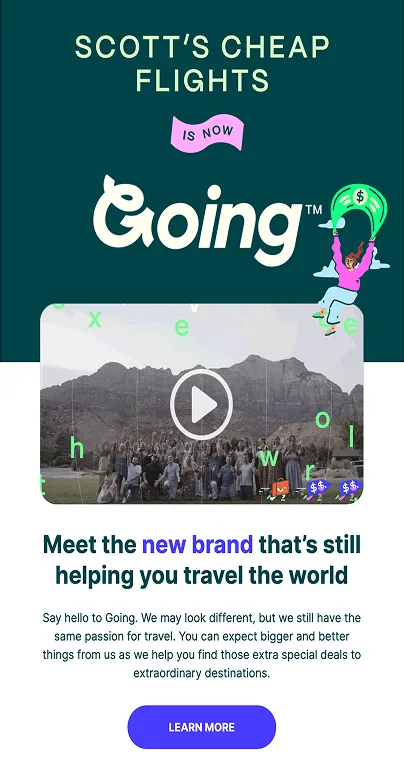
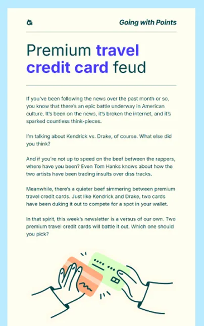
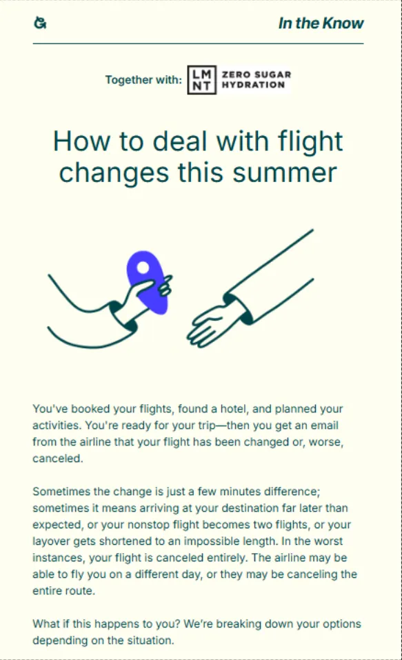
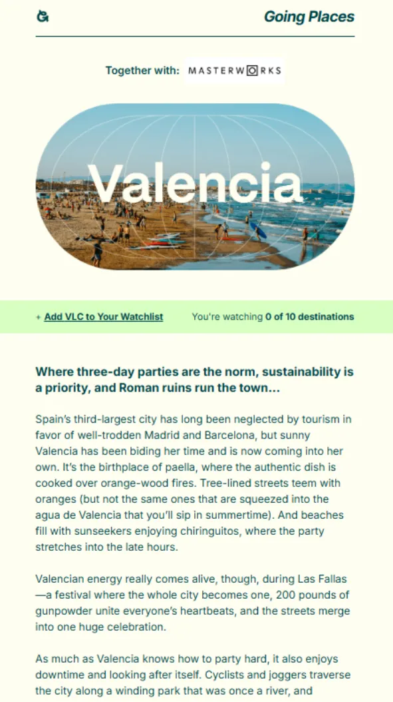
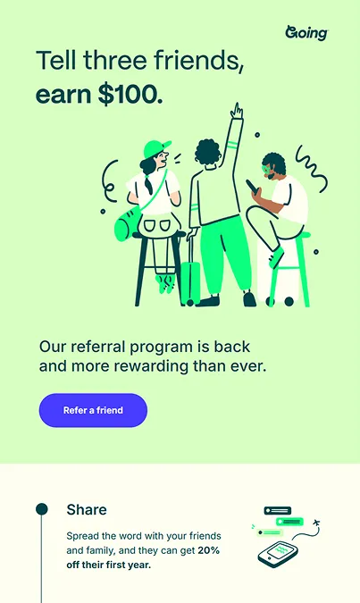
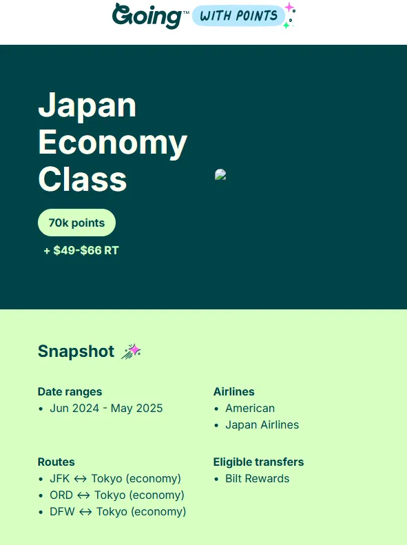
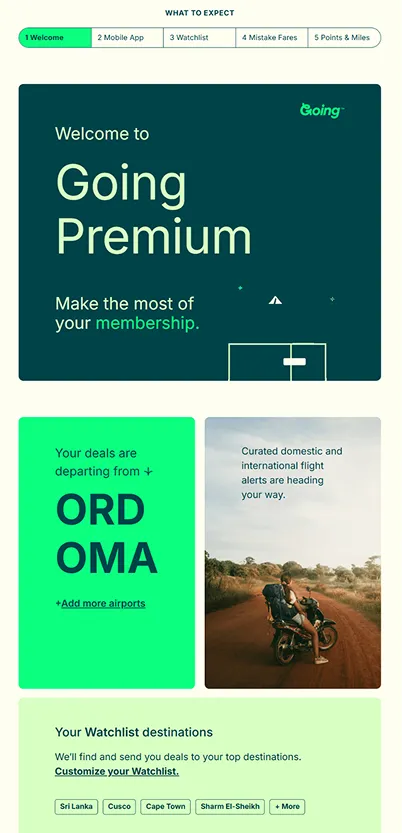
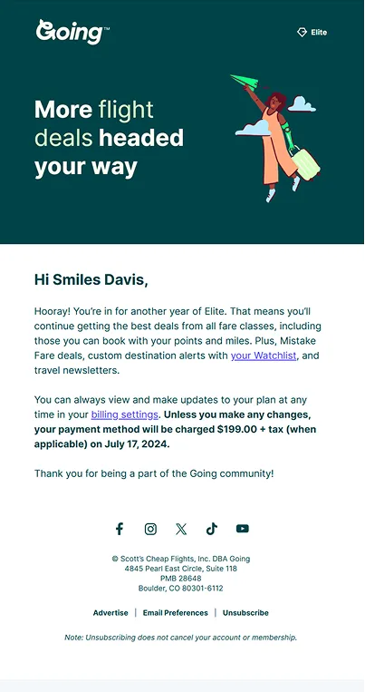

How do you announce a rebrand and make onboarding emails feel useful, human, and trustworthy?
For Going, it means clear messaging, thoughtful personalization, and product moments that feel alive in the inbox. This travel brand shows how lifecycle strategy and design systems can work together.
In this episode of Feedback Friday, Matt Helbig chats with Going’s Lori Dennis, with insights from Justine Jordan. They break down the Going rebrand rollout and welcome series—from progress bars that adapt to user state to watchlist CTAs, dynamic content, and mobile-first layouts. The team shares practical techniques for building trust, driving app adoption, and reducing renewal disputes.
If you work in ecommerce, product, or retention marketing, this episode is full of ideas to help you craft emails that inform, reassure, and perform.
TL;DR
- Rebrand emails that inform, reassure, and excite
- Welcome-series progress bars that adapt to user state
- Personalization using onboarding inputs and watchlists
- App-download prompts that suppress follow-up emails
- Renewal notices that reduce disputes and build trust
🎥 Watch the full breakdown or read the transcript for strategies you can apply to your next campaign.
Matt Helbig: What's up, emo geeks? Welcome back to another episode of Feedback Friday. This week, we're diving into the Going.com rebrand with Lori Dennis. We'll be reviewing their email strategies and how they communicated this massive change to their email subscribers, from dynamic content and personalization to driving app downloads and consistent branding.
Going has really nailed it, and as a bonus guest this week, we've got Justine Jordan with her expert insights, helping us break everything down. Stick around as we explore how they combine stellar design with effective content strategies to keep their audience engaged, informed, and excited. Let's jump right in.
Lori, do you want to introduce yourself?
Lori Dennis: Absolutely. Thank you so much for having me. I'm Lori Dennis. I've worked at Going for almost three years now, and I'm the Director of Customer Marketing. I'll first actually give a little background on Going. Going is a tech startup in the travel space. We are a subscription service with more than 2 million members, and our aim is to help our members never overpay for flights again. Going sends flight alerts for your home airport.
So you sign up, tell us where you like to fly from and where you hope to go if you already have a destination in mind, and we alert you when we find great flight deals. I manage a super-talented team responsible for lifecycle marketing, product marketing, promotional campaigns, email development, and web development.
We are huge fans of Really Good Emails because, for a long time—in fact, most of the time that we've been in business—our primary product has been email. Those flight deal alerts I was talking about that we send to members’ inboxes were our product for almost eight years. It's changed a little bit recently.
We launched our first mobile app in March 2024. Now, we're also in the business of push notifications and several other marketing channels, but email is still a very strong core piece of our daily operations at Going. So, I'm very excited to be here talking about our emails.
Justine Jordan: I'm here nerding out because we get to talk to Lori.
I have been a big fan of Going’s emails for, well, since they were Scott’s Cheap Flights. They've enabled me to travel to some really cool destinations, and I've always admired so many of the emails that we're about to talk about today. Primarily, one of the things I've admired is the tie between how well they bring their email strategy to life with really awesome, brilliant design. And so digging into the details of that with Lori is why I am very excited about this conversation.
Matt Helbig: Yeah, and thank,s Justine. You actually discovered these emails, you submitted them to Really Good Emails, so I appreciate you doing some research. But yeah, for a long time, these have been an inspiration and definitely some heavy hitters on these emails.

So, to jump into this first email, it caught our eye just because Scott’s Cheap Flights was a well-known name. However, it transitioned to Going, and we don’t really see a lot of rebrands in emails. So, I think we wanted to focus on this one and just kind of learn if there were some lessons about how you can use email to communicate a rebrand effectively.
Lori Dennis: Yeah, sure. This is a great one to start with. The goals for this email were to inform all of our members that we had changed our name and explain why we were doing this, and also to reassure them that our services and their experience would not be changing at all. So we had to do all those things within an email while also hyping up the new brand. It was a tall order, kind of a challenging one to pull off, but I think we did a pretty great job of balancing all those things.
We knew this rebrand would be really exciting, both internally and for our members, but we also knew that it would be a pretty hard sell for a lot of folks who had been with us for a long time. At the time we sent this email, which was in early 2023, we had been Scott’s Cheap Flights for nearly eight years. We have a lot of members who have been with us for almost that entire time. Travelers who had been getting Scott’s flight deals for four years, five years, and more. We deeply understood that Scott’s Cheap Flights had a certain small insider-secret feel to it, whereas Going feels much bigger. So we were trying to be very mindful of that. One of the goals was really to bring members along with us on the journey and make them feel like a part of it. We also knew that we had to go out with a message that felt exciting and engaging but was also informative and reassuring.
So all those goals I mentioned at the beginning, we really wanted to make sure our members understood that our mission did not change, that Scott is still here, and that's the section you have up now. You can see all the different callouts: we’re getting better, a mobile app is coming. We were already teasing the app almost a year before it launched. I think it was super successful. I think we accomplished everything we set out to do. Of course, there were people who were upset about the rebrand — nothing we can do about that.
Justine Jordan: One of the things I remember, having been a recipient of this email, is how you announced the rebrand and then not only tied the email design but also tied it into the inbox experience. So if I recall, the emails came from Scott’s Cheap Flights, then it was Scott’s Cheap Flights Going, and then Going formally. And if I recall, you even had certain milestones that you were looking for that informed the strategy of how you led people down that transition.
Lori Dennis: The progression of the rollout of the brand relaunch was actually really long. It started months before we even came out with this announcement. We didn’t want the announcement to be a complete surprise for members, so that was really part of the aim of bringing them along on the journey with us. We did run a short teaser campaign ahead of the launch. We also conducted member surveys along the way to make sure we were on the right track. This was part of a much larger strategic rollout that did include changing our name in the “from” email address over time, exactly as you said. We were Scott’s Cheap Flights for a long time. We knew that if we suddenly started sending emails from Going, we were going to run into deliverability issues first and foremost, but also really confuse people who maybe missed the announcement email or maybe didn’t subscribe to this type of email from us and didn’t receive it at all.
So we had to be really mindful and thoughtful about the rollout. We had banners on almost all of our emails for a few months, letting people know, “Going, formerly Scott’s Cheap Flights,” in addition to the teaser campaign. We had a couple of versions of this email. We had a dedicated landing page for information. We ran a social campaign. There were PR efforts behind the rebrand. Scott got on Reddit and did an AMA, which was pretty popular. There was a lot happening behind the scenes in support of this campaign. It wasn’t just this one email — truly a multi-channel effort.
Matt Helbig: Speaking of this email, it’s honestly like a masterclass of design and strategy all working together. Like you said, email is an extension of the product, or your only product at the time. To me, it really shows respect for the audience and shows that you are thinking critically about both the development, design, and strategy. Because there are lots of little subtle pieces in here, lots of best practices: the use of the icons, the “we love Scott” callouts, all these things coming together. Little points that show a lot of attention to this channel specifically. It’s really cool to see.
Lori Dennis: If people wanted to know more about the rebrand than we presented in this one email, we did have a couple of places where we linked to more of a deep dive into why we did it and what we did. The rebrand itself, the new color palette, the new fonts, the new logo — truly a deep dive into the design. So if people wanted more information, it was available for them. And the video at the top, too, was a really good showcase of why we rebranded. I highly encourage folks to watch that — it’s still live, actually, at going.com/rebrand. I think the team did a great job pulling it together, making it fun, and building some excitement.
Matt Helbig: Yeah, I love the balance. I feel like there’s almost some constraint, too, because you could include a lot more content in this, but I really appreciate bringing in the essentials and trying to trim it down. And then, if people want more information, of course, they can visit these links or the video. This is a really, really good email.
Justine Jordan: That’s a great point. It’s hard to dial in that messaging and have that constraint to be like, this is what the audience cares the most about. Versus so many brands hype up their rebrand when everyone is really just wondering, “Well, what’s going to change for me?” And you do a really good job of addressing that.
Matt Helbig: Yeah, I think it just shows a real understanding of your audience. Alright, well we’ve got another email moving through these. This is a premium travel credit card, a feud. Do you want to explain a little bit about this one?

Justine Jordan: The thing that stood out to me when I first saw this in my inbox was just how dense the email was with information, but also how beautifully the design presents a very dense wall of text. And this came out around that kind of infamous conflict that was going on. Lori, if I recall, there’s a really interesting reason why you named these cards after those individuals and how that integrated into this strategy behind the email, and also how your team designed it.
Lori Dennis: Yes, absolutely. This is one of our newsletters. We do send out newsletters to our members weekly. Due to our affiliate rules with credit cards, we can’t use the branded names of the cards themselves in emails, so as a workaround, we played off of that ongoing feud in pop culture by calling the cards the names of Kendrick and Drake and pitting them against each other.
It was very relevant at the time. We had also run a similar format a few months before, calling the cards Beyoncé and Taylor, and that was one of the highest-revenue newsletters we’ve ever sent out. So yes, very dense. Most of our newsletters are very dense, with very helpful, useful information, but it’s always a challenge to figure out how to present that in a way that is clear, easy to read, broken up with those fun branded illustrations along the way, and just calling out the different sections of information using hierarchy of design and different CTAs for different things. Those point to articles on our website where you can actually read the names of the cards. We just can’t do it in the emails. So yeah, this was a fun one.
Matt Helbig: You know, incorporating the branding, you know, spacing things out, making it easy to read, including some CTAs, these breakout sections really, like you said, make it easy to consume this content and kind of follow along on this journey and learn about the different products. And then I didn’t know we wanted to call out this top section because it’s something that we don’t really see a lot: this link to the Going app and also these social share newsletter links up here.
Lori Dennis: So this newsletter was sent out shortly after the app launched, and the “Download the app” button was our way of getting more people into the app ecosystem. A lot of our members don’t yet have the app downloaded, so we are always prompting that action. If they already have the app, however, we can see that and personalize it by removing that link. So if you already have the app, you’re not going to see that in your emails. The sharing functionality is also relatively new, but it is working super well. The sharing link takes you to a version of this article on the website where you can copy the link and send it out, but you can also share it on Facebook or X, and it just helps tremendously with the distribution of these messages.

Mat Helbig: Nice. Cool. Alright, well we can jump over to the next one here.
Lori Dennis: This “In the Know” send — another really text-heavy one.
Justien Jordan: It is. And when I was choosing my favorite emails from Going, there were so many that were potentially my favorite. But this one was really interesting to me because, as a marketer, I’ve struggled in the past with balancing sponsored with editorial and our own content strategy goals. And this is again where I was just so curious to hear from Lori: how do you handle this? Not only is it dense information designed really well, but the content strategy combines sponsored and editorial.
Lori Dennis: I think this one, when I went back to the team and asked them for things they might improve if we sent it again, they reflected on the fact that it’s maybe too text-heavy, and we might want to break this one up a little bit more, kind of in the way the last one was. It does contain a lot of helpful information and great resources to empower travelers to have their travel go as smoothly as expected, even if plans are disrupted. But we probably could format this one a little better to highlight the resources and make it a little more digestible.
We did okay with the bolding and the bullet points, but I think we could have done more with this one. The sponsorship is interesting. The Element co-branding on this one feels very editorial. If you go back up to the first ad, we have a few different ad placements in our newsletters, so this would be our primary ad. And if you read the first line there, it says, “Do flight changes and cancellations stress you out when you’re traveling?” That is exactly what this newsletter is about.
We work closely with our ad sponsors to customize their copy to ensure it feels somewhat editorial. Not every advertiser is game to do that, but Element has been working with us for a while. We worked closely with them to tie their copy in with the topic of the week so it doesn’t necessarily feel like a blatant ad, even though that is what it is.
Justien Jordan: That’s what I loved about it — I felt like it was woven together in such a way that it felt more natural and not just pushy. So great job.
Lori Dennis: The other thing I was going to say about this newsletter is the timing of it. We send a version of this email almost every year and update it, but we sent it this year, particularly around travel time, when we were expecting that flights would be canceled or changed, or delayed. So think prime summer peak travel season or around the winter holidays, when we tend to see spikes in travel delays and cancellations. It’s especially relevant for members around those times, and we tend to see higher engagement when we really thoughtfully time out our topics.
Mat Helbig: Yeah, I definitely love the sponsorship. You see a lot of brands just throw it in like a banner or something, but I think including it as part of the email feels a little bit more editorial, as you said, and kind of brings it together. It still stays true to the brand without feeling too intrusive. So definitely a fan.
Beefree is the best way to go from inspiration to creation. Beefree has HTML templates for all industries, occasions, and seasons with eye-catching, customizable designs compatible across devices. Beefree’s templates will help you create impressive emails easily so you can focus on what matters most. It’s really one of the fastest and easiest ways to elevate your email game. Start your free trial today at beefree.io.

Alright, to the next email. We’ve got a very pretty Valencia email here. I like the use of photography here, some GIFs. Do you want to talk about this one a little bit?
Lori Dennis: This Valencia email is one of our destination-themed newsletters sent to members each Wednesday, where we take a really deep dive into one specific place or experience. We hypothesized that this one would perform really well in the height of summer — again, that timing thing — which influenced when we decided to run it, playing into the fact that people are dreaming of a European summer vacation. We did see really great engagement with this one. If you scroll to the top, you see in the green band it says, “Add VLC to your watch list.” This is a recent addition to the newsletters, and that watch list feature is for paid members only. Our members on our free tier don’t actually see that same message. They instead see an upsell prompt to upgrade to start their watch list.
That button — you must have been a paying member when you received this email to see that. If you click on it and you’re logged into our website, it automatically adds Valencia to the list of destinations you’ve told us you want to go to, and we’ll start watching for flight alerts for you. So that’s a pretty cool product email integration that I think is working quite well. It also tells you on the right how many destinations you’re watching.
Justine Jordan: Yeah. That’s what stood out to me when I first saw this. And again, it made me really wonder about the strategy behind it, because I was a paying member at the time. As you said, email is the primary product, the primary way that I engage with the brand. I don’t log into the website all that often, and so I actually didn’t know about the watch list feature at all until I saw that banner in the email. And I’m assuming that was one of the reasons why you put it in there — to get people to start actually using it and to draw more adoption and awareness.
Lori Dennis: Yep. There’s another prompt for it at the bottom too.
Matt Helbig: Yes. This is such a cool area. This layout is awesome to see in email, and I think it does a really good job of breaking out some information to make it a little bit easier to read. And then, as you said, the “Add to watch list” and “View all deals” CTAs make it all feel really complete.
Lori Dennis: We have a great design system in place at Going, and we do need to cram a lot of information into these emails at a glance and make them really easy to scan and just know exactly what you’re getting when you go to Valencia. This table is a really clean way to accomplish that. And these icons — I love our iconography system, it’s great.
The section below that, the price history section — oh man, it looks simple. It really does, but it’s not at all.
Matt Helbig: Yeah, this being live text was so impressive to me.
Lori Dennis: Yeah. That’s all done with code, so it’s a series of tables nested within tables. That speech bubble triangle at the bottom, the little green and peach-colored pills — that was really tricky to code. We had to use conditional code to create that triangle shape and then hide it for email platforms that don’t support it. It’s a lot more than meets the eye. Also, the rounded corner CSS — the design team designed it a certain way, they asked our email developer if it could be done, and she figured it out using existing examples, Litmus Scope, and also by making a lot of small tweaks to really get it to function just right.
Justine Jordan: Let’s give a round of applause to the designer-developer duo that figured that out, because that’s pretty impressive.
Lori Dennis: Yes. And again, that “Add to watch list” button: if you are not a paying member, if you’re on our free tier, you would see a prompt to start your watch list by upgrading.
Matt Helbig: Even here on mobile, you can tell that someone took the time to test and stack the CTAs. How this email looks on a desktop is also really reflected on mobile. And I kind of assume that maybe your audience is more mobile-first.
Lori Dennis: It’s definitely skewing that direction. For a long time, that was not the case, but we’re seeing almost a 50/50 split at this point, and we are aiming to be a mobile-first company. So we’ll definitely see things continue in that direction.
Matt Helbig: The different considerations that you’ve made on each screen size are definitely awesome to see.

This next email here is a referral email. I always like to see these. Not a ton of brands do these, but this one stood out to me just because I think it was done really well. And there are a lot of smart pieces in here, not just a link to share or something like that. It kind of explains the whole program.
Lori Dennis: This email was the inaugural announcement of our new referral program. It was our first change to the program since 2021, so people were pretty used to the old one. We completely shifted the structure. You used to be able to refer friends and earn free time with Going, and now it’s about earning money.
This email served a few purposes. We wanted to announce the new program and hype it up and get people excited about it, but also to educate members on all the various ways that they can refer people to Going. So we kept it pretty short. We wanted to make sure people read it all. The copy is really short, to the point, bulleted, to get out the message that our referral program is unique and that you can refer people not just with a link, but also by sharing deals.
Justine Jordan: It’s also just so concrete, like you said, going from earning something that feels a bit more abstract, just earning cash, and making it fairly effortless, I think, is such a great idea. And I just also love the connection of those dots and the way that it visually connects. And I just admire the copywriting that goes into this so much. Like you said, it can be fairly complex, and keeping it succinct while still communicating the point is really an art.
Lori Dennis: Yeah. In fact, this email I thought was maybe a little too succinct, and so we actually developed a second email around the referral program. And that one is a little bit of a deeper dive with a video that shares real-world examples on how to refer people. So I think it was a really good one-two punch to get the point across and make sure people were understanding how to actually go about referring. And it’s working well. Our program has only been live for less than two months, the new referral program, and it’s going really well.
Matt Helbig: Yeah. One other theme I wanted to highlight in all these emails is that Going’s tone of voice feels very human to me.
Share with your friends. You know, this doesn’t feel like work or spam. I think bringing some of that less-than-corporate, jargony speak is definitely beneficial to a brand like this. It really feels like it’s coming from people, and you know, Going is a friend that can help you travel better. So I think that is done really well with all these different sends.
Lori Dennis: I’m so glad that’s coming across, because it’s really part of our tone of voice that we are that friend. We’re here to give you good travel tips and help you see the world. Our copywriter does a great job with that.
Matt Helbig: Oh, we’ve got a couple more to walk through. And this one’s all about Japan economy class. A lot of data points in this one — a lot. So I’m excited to see some of your thoughts on this.

Justine Jordan: The reason why I submitted this one was that I was dying to hear from Lori or someone who had a hand in this email about how they make this happen. So I assume a database, sophisticated ESP, lots of testing, or it was like… I don’t know. Look at that giant list of cities, like all of the things that you can do. It’s such a helpful email. So dated, dense with data, but also, I can only imagine what it took to set it up.
Lori Dennis: Oh, you picked a tricky one to talk about. Okay. We send out a bunch of different types of deals. We send out deals you can book for cash. We send out deals you can book with points and miles, and this is an example of points and miles. We also have mistake fare deal templates. We have limited and premium deal templates — all kinds. But for the purposes of this example, this is our points and miles deal template, and it is extremely complex, but we don’t want it to seem extremely complex to the end user.
The whole point of these emails is to help people with something that’s really complicated, which is using your points and miles to actually book travel. This email is all about making use of your points more accessible and really giving someone absolutely everything they need within the body of the email itself to be able to take that trip for free. You know, like points that you’ve earned grocery shopping, filling your tank with gas — literally, you can take those and use them to go to Japan with just this email. Yes. For the purposes of this interview, I talked to our designer and our developer who worked on it. This was designed by Rachel Smith, who’s our Director of Product Design. Most of our emails are designed by our marketing creative team. However, this actually is part of our product. So the product design team worked on this one — a little bit of a new onset at Going. And then it was coded by Jessa Moon, who’s our Senior Marketing Developer.
Some design notes for you: We really had to give a lot of thought to the hierarchy of this email, because there is so much information to present someone with. And so we started with a snapshot right at the top, and instead of forcing a member to scroll past a wall of information to figure out if this deal would even work for them, we put it all in the snapshot. We give them all the key information right up front: here are the dates, here are the airlines, here are the eligible transfers for points, and here are the routes. And if it doesn’t work for you, move right along. If it does work for you, keep scrolling, and we’ll give you absolutely all the information you need.
We couldn’t make the email interactive, so scrolling is inevitable. And so we had to really use a hierarchy and sections and a grid-like table system to lay everything out in a way that is easy to figure out and understand. We kept departure and return dates in columns for scanability. It’s so much — so many dates, just tiny little text, and if you don’t know what you’re looking at, it’s going to be really hard to read. So we had to make it make sense even for people who are maybe new to points and miles.
Justine Jordan: As a frequent flight booker and points travel nerd, I was just like, wow. This is the most helpful way that you could help me digest what is a very complex topic. And so I just really want to applaud your designer and developer for taking the time to thoughtfully present all of that, along with even the instructions of how to get it done at the bottom.
Lori Dennis: We had to give all this information on exactly how they can book the deal on their own. This doesn’t live on our website, at least not right now. So if someone wanted to click through, the only place to link them to with the CTA is to go book it with the airline. So we have to explain how transfers work, how the point breakdowns work, and any extra information they might need to figure out how to navigate that process. The other thing I learned by talking to Jessa, who coded this email, is that the template itself is really simple. There’s one of everything in the template. These are API-triggered by our travel ops team — that’s the team at Going that finds the flight deals, including points and miles deals. They input all the information, and the API triggers this template.
It leans very heavily on dynamic content and logic statements wrapped around each element. She actually described it in a fun way—it’s kind of like Mad Libs for email. The data pulls in from the API and fills in the blanks. Each block only needs to be coded once, and then it’s duplicated using Liquid for all the different data points that get plugged in.
Justine Jordan: I see. This is the magic behind the scenes that we all love to hear about. Thank you for demystifying. Yeah. Like if someone is banging out table after table… but you know, Liquid and API, that all makes a ton of sense.
Matt Helbig: Yeah. Cool. This is a great use case of live text. Someone might say, oh, this might take a lot of time if I have to export all these images. But like you said, if you can use data and have it flow into a template using a design system and live text, you can bring in a lot of these data points and make it feel really one-to-one and unique without having to recreate or recode the entire email every time.
Justine Jordan: And you make it scalable, you operationalize it. And that’s even cooler from the business end of things.
Lori Dennis: We had to. I think we support something like close to 200 airports in the US, and so there’s no way we could code each of these manually. It would not make any sense.
Matt Helbig: For an impossible task, you really nailed everything. And I really like this snapshot. I feel like more emails or newsletters should have a “too long, didn’t read” or snapshot section summarizing the information.

Alright, well, now we have some more product-related emails here. It was really interesting to see how the ones we’ve looked at so far are sort of promotional, and now these are a little bit more product-focused, a little bit more transactional, bringing you into onboarding onto the premium or even premium part of your site.
Lori Dennis: I love that you used the word onboarding. That’s exactly what this is. We do have onboarding when you first sign up for an account on the website or the app. But this is the first email you receive when you sign up. So we’ve been internally calling this our unboxing email. It’s email number one from our welcome series.
And while we don’t have a physical product to actually unbox, our membership does include a ton of cool features. So we wanted to make sure that someone signing up for the first time knows right away all the features they have access to and how to get the most from their subscription. Yeah. We’ll start at the top with that progress bar. It’s really complex. It looks simple, but it is not. We have multiple versions of the progress bar based on whether the person has signed up via the website or the app. That was something that took an extraordinarily long time to figure out, but we did it.
We figured it out. It had to account for a varying number of emails. Somebody might get four emails, somebody might get five emails. You see email two listed there, it says “mobile app.” If they signed up through the app or if we know they already have the app, they’re not getting email two. They’re skipping from email one to three. So yes, we’ve coded that so it works for everyone
Matt Helbig: I’ve seen a few brands do something like this, but never this well done, to be honest. Even on mobile, this is like a chef’s kiss because all these little details really add up and make it feel like such a comprehensive idea around something. But I really like calling out these sections and setting an expectation of how many onboarding emails I’m going to get. Is it going to be thirty? But having it set to five, it kind of feels like, okay, I know what to expect and not feel overwhelmed.
Lori Dennis: Yeah. And actually, that fifth one there — points and miles — it does open up a little bit of a door, because that is an additional choose-your-own-adventure series. Once you get that fifth email, you can opt in for an additional points and miles drip campaign, which is a three-part series. It’s basically an in-depth crash course on how to use airline miles and credit card points for travel. It could have been an eight-part welcome series, but that felt really overwhelming. So we kept it at five and gave people the option to opt in for that if they wanted to learn more about points and miles.
Justine Jordan: There are two things I love about this. One is that we always talk about personalization in the email world. Too often, that’s like, you know, “percent, percent first name here.” But this is what I see as true personalization, where it’s almost invisible to the user because you’ve coded this and structured your data and your email program in a way where it’s tailored to me. It’s personalized to my experience about whether or not A, I have the mobile app, or B, if I’m really interested in opting into that other series. So I love that the user are in control, and you’ve honored their preferences and the data you have about them in a way that tailors the experience.
Lori Dennis: Everything about this email is highly personalized right from the headline, going premium-like.
We know that you're premium and you're not elite. We have different versions based on what tier you've signed up for. The bright green box right below that: when you go through onboarding and sign up for our product, we ask you what airports you like to fly from, and this personalization lends confidence to the fact that we've captured your inputs during onboarding. We're watching for flights from those preferred airports. And if you only have two listed, like this person here, there's a prompt to add more airports. So we could keep looking. Maybe you've entered a couple of smaller airports that don't get a lot of international flights. We'll prompt you to add some bigger airports, that kind of thing.
Your watchlist destinations, that section too, are pulling in places that you've told us during onboarding you want to fly to. We're reassuring and also giving you an opportunity to go back into your watchlist right from this email and either add or remove destinations that you've selected.
Matt Helbig: Yeah. My mind is being blown by every different section again, throughout all these emails. Shout out to the motion graphics here. Everything just feels so clean, so pretty. It's nice, but like you said, Justine, to me email personalization is honestly like every email is almost one-to-one in some way. It's a combination of segmentation and dynamic data and choosing which data points to bring in. This is really smart, just about bringing in what's important to the user. As we said before, knowing your audience and understanding what data points you have, how to segment, how to design, and bring it all together is something that feels really personalized, concise, and useful.
Lori Dennis: Yeah. I love how this one translates to mobile, too. It's just so clean. It's such a great IT experience. You don't lose anything by looking at it on mobile at all. There's also that box there with the phone, which is only going to show for members who haven't downloaded the app yet. It's a little prompt. Go get the app in case you didn't know we had one. And if you do that from this email, you won't get email two. Then your progress bar changes. Cool, huh?
Matt Helbig & Justine Jordan: Wow.
Lori Dennis: We also have expert travel tips throughout this whole welcome series. Again, this is email one of several, and each one features a different travel tip to build trust positioning, going as travel experts. Add a little more information to make people more savvy travelers now that they've joined our membership.
Matt Helbig: I definitely advocate for any onboarding to maybe show some faces, have a little FAQ section, make it feel like the purchase you just made or the signup was justified, that someone can help you out, or that there's a lot of information available to guide you through something. When we talk about constraint, I think this feels really concise and as you say, you're breaking it up rather than putting it all into one. All those little elements build trust with the consumer and make this experience feel really great.
Lori Dennis: Yeah, and back to the goals of this email: the strategic goals were to generate excitement around a new membership and also educate on our features.
I think we do a fantastic job of doing both. Don't get me wrong, there's a ton of information packed into this email, but it doesn't feel overwhelming. And I think that was a pretty challenging thing to pull off. I think we did a great job with it.
Matt Helbig: Cool. I was going to say this is Feedback Friday, but honestly, we have not given much feedback.
Justine Jordan: I feel like we're unboxing all of the amazing secrets behind Going's email program.
Matt Helbig: Alright, we can wrap up with this last little email here: a transactional email just letting people know that their account is going to be renewed. I feel like some people don't want to send an email to say, “Hey, we're gonna charge you money,” but to me, as you said, building trust with an audience means it's good not to surprise someone with a fee and then have to deal with chargebacks or something. So I really appreciated this one as well.

Lori Dennis: We aim to always be on the traveler’s side at Going, and a big part of that is maintaining trust. Nobody likes to be hit with surprise membership renewal charges. It's never fun. So we make a point to let members know in advance when exactly their plan will renew and what the charge will be. Some might argue that this reminds people they're about to be charged, and they cancel. Yes, that's always going to be the case with a membership subscription business. But I think on the other side, it's also proven to mitigate churn and help reduce credit card disputes, which is something we track at Going. A lot of people might not realize how harmful a credit card dispute can be for a small business, and if they get hit with a charge they're not expecting, they might not know that they can cancel it. They might just go right to the credit card company and dispute that charge. That comes with all kinds of penalties and fees.
We work really hard to reduce the number of instances where someone gets surprised with a charge and wants to dispute it. Those are the purposes behind the email. We've tested a few things with it, mainly around when to send it out. Ultimately, we've landed on sending it 30 days before the charge hits, but we’ve also started testing sending a reminder if we know that someone hasn't opened it. Then they get a reminder two weeks later, about 14 days before the charge. That's been going really well, and we have seen credit card disputes go down.
Justine Jordan: I love the tie between the email channel and what can be a critical revenue or risk part of the company, and seeing that cross-functional collaboration makes me happy, too.
Matt Helbig: Awesome. Well, thank you so much for taking the time today. You had a ton of Going emails. We only looked at a small portion of them, so if you are interested, definitely sign up for Going and get all those amazing emails. Thanks again, Lori. Are there any other things you want to plug? Are there any takeaways you want to leave us with?
Lori Dennis: Like you just said, if you're interested in receiving some of these emails in your inbox, I encourage you to sign up at going.com. Our limited tier is always free and includes domestic flight deals within the lower 48 states. You'll also get those great travel newsletters. We looked at a few of those today, so that's a great place to start if you just want to check it out and get your feet wet. But if you are looking to travel internationally, our premium membership more than pays for itself with just one flight booking. So well worth it, in my opinion.
Justine Jordan: I know I’ve definitely made good use of some of these deals. And thank you so much for giving us a peek behind the curtain. I love businesses like Grammarly that always stood out to me as a company where email was the product. I didn’t have to log into the website hardly ever because I got so much value from the emails. To celebrate the power of the channel by creating a whole business around the product, being an email is just so cool to me. Thank you for giving us a peek behind the various aspects of the Going product.
Lori Dennis: Absolutely. Thank you so much for having me. I love geeking out over emails with you two. And yeah, let's do it again. We have a bazillion emails to showcase, so I'd love to do this again with you sometime.
Justine Jordan: Oh yeah, let's get your designer and developer on here so we can really dig into the details.
Matt Helbig: That sounds good. Alright, thank you so much. Have a great rest of your week.
Lori Dennis: Thank you. Bye-bye.